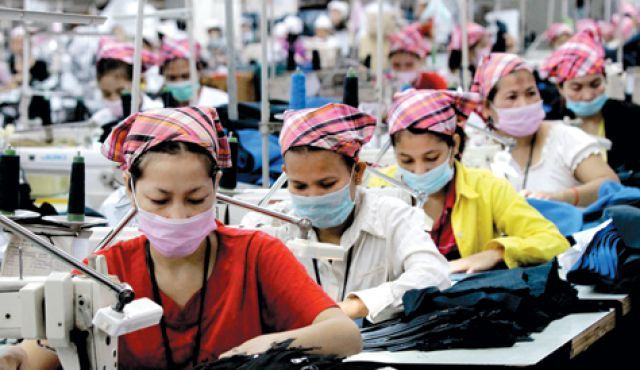

Inhumane Working Conditions
Working Condistions

CREDIT: Live-Fair
We have known this for decades: most of our clothes are made in countries in which workers’ rights are limited or non-existent. In fact, production sites are regularly moving location, on the lookout for ever cheaper labour costs.
We often hear company owners saying that "for these workers, it is better than nothing”, “at least we give them a job”, and to a certain extent, they are right. But it is also right to say that they are exploiting the misery and taking advantage of poor populations who have no choice but to work for any salary, in any working conditions. Even the European Parliament is using the term “slave labour” to describe the current working conditions of garment workers in Asia.
We know that if working conditions improve in one country, companies will just move to another. We believe that we cannot expect much from the corporate world or from governments if consumers do not push for a change.
Wages
Many fashion brands assure their customers that the workers who made their clothing are paid "at least the minimum legal wage". But what exactly does that mean?
First of all, it means that many other brands do not even pay the minimum legal salary!
Furthermore, in most of the manufacturing countries (China, Bangladesh, India...), the minimum wage represents between half to a fifth of the living wage. A living wage represents the bare minimum that a family requires to fulfil its basic needs (food, rent, healthcare, education, etc). So, in summary, these brands are bragging about paying their employees 5 times less than what a person actually needs to live with dignity…
Working Hours
Garment workers are often forced to work 14 to 16 hours a day, 7 days a week. During peak season, they may work until 2 or 3 am to meet the fashion brand's deadline. Their basic wages are so low that they cannot refuse overtime - aside from the fact that many would be fired if they refused to work overtime. In some cases, overtime is not even paid at all.
Health and Safety Conditions
The collapse of the Rana Plaza in 2013, killing 1134 garment workers in Dhaka, Bangladesh, has revealed the unacceptable working conditions of the whole fashion industry to the world.
Employees usually work with no ventilation, breathing in toxic substances, inhaling fiber dust or blasted sand in unsafe buildings. Accidents, fires, injuries, and disease are very frequent occurrences on textile production sites.
On top of that, clothing workers regularly face verbal and physical abuse. In some cases, when they fail to meet their (unreachable) daily target, they are insulted, denied breaks, or not allowed to drink water.
https://www.thegoodtrade.com/features/what-is-fast-fashion
https://www.sustainyourstyle.org/en/whats-wrong-with-the-fashion-industry#anchor-fast-fashion